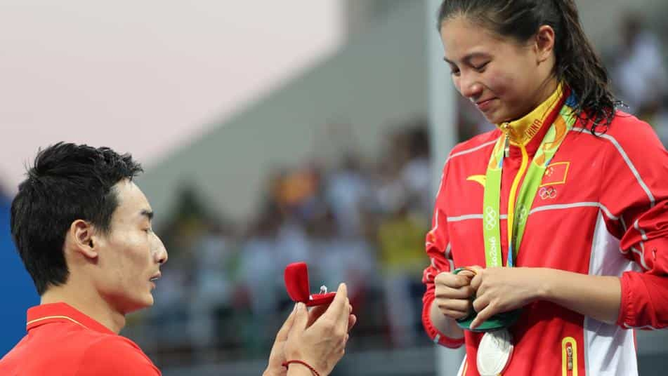
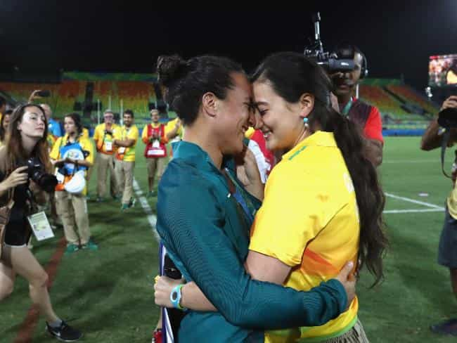

< < < Back
5 Examples Of The Mainstream Media’s Extreme Bias – Return Of Kings
Face it, the mainstream media is not only full of contradictions, but deep-seated, institutionalized biases. When a male or conservative does something, it is often considered horrendous. Yet when a female, liberal or a member of another “special” group does the same thing, passes are given or journalists’ eyes are averted.
Social media users with common sense political opinions have already started to compile these glaring double standards. Return Of Kings and its supporters should continue doing the same thing.
So here are five of the most egregious recent examples of hypocritical mainstream media madness:
1. Use of dead veterans’ families at political rallies or conventions
When Khizr and Ghazala Khan appeared at the Democratic National Convention to lambaste Donald Trump for his views on Muslim immigration and supposed behavior, commentators and journalists went wild with fanfare. Their son Humayun, a Muslim soldier, had died in Iraq. Trump was attacked for allegedly grandstanding about and minimizing Humayun’s death.
Meanwhile, many of these same newsmen and women, including Rachel Maddow’s stooge Steve Benen, derided the Republicans for featuring Pat Smith, mother of Benghazi fatality Sean Smith, as a speaker at their own Convention. Mrs. Smith had laid into Hillary Clinton over the latter’s role in and perceived indifference to her son’s death in Libya. So one family became heroes to the media for going public after their tragic loss, while another was portrayed as so weak in their grief that they were manipulated by big, bad Republicans into talking.
Moreover, Trump had nothing to do with Sean Smith’s death. Compare this to Clinton, who was the Secretary of State at the time of the American deaths at Benghazi and whose State Department had received numerous calls for assistance. Considering that Sean Smith and others died alongside U.S. Ambassador Christopher Stevens, the first American ambassador to be killed whilst serving since 1979, the woefully insufficient security precautions taken by the Obama Administration and Secretary Clinton should not have transpired. But this spotlight on Clinton does not make for good (liberal) news.
2. Psychiatric records for a war hero vs. medical records of a pathological liar
Countless liberals, both in the media and within other leftist cabals like mainstream Hollywood, have attacked those questioning Hillary Clinton’s health as “misogynists,” “sexists” and other undesirables. When these tags are unable to be used, leftists claim that even piecemeal doubts about her physical condition are nothing but conspiracy theories on par with Roswell UFOs and lizard people running the world.
Yet eight years ago, these same people were frothing at the bit to out John McCain for his supposedly poor health. Most perversely of all, they homed in on his decorated military service, suggesting he had Presidentially disqualifying mental health conditions from his service in the Vietnam War and the multiple years he spent as a prisoner-of-war. “Where are his psychiatric records?” bellowed one piece from Salon, in addition to a number of other articles that more than hinted at the same topic.
Whilst I, like many of you, revile his putrid, watered-down “Republican” policies on many issues, McCain had gargantuan balls in Vietnam. Here is a man who spent more time as a tortured prisoner-of-war, including a stay in the notorious Hanoi Hilton, than Barack Obama spent in the US Senate. As the son of the commander of US forces in Vietnam, McCain received numerous offers of repatriation from the North Vietnamese. He refused and would only accept being returned home once fellow American soldiers captured before him were released. By contrast, Hillary lacks the mental fortitude to tell the truth most of the time, not even after she’s had seizures, coughing fits, and dramatic collapses on camera!
3. Sexualizing political candidates (and removing their genitals)
When an artist by the name of Lushsux painted a mural of a scantily-clad Hillary Clinton, a local Melbourne, Australia council and numerous global commentators derided it as “misogyny” and “sexual objectification.” “Take female politicians seriously!” was the crux of their shrill arguments against the rendering. Lushsux then trolled his critics by repainting the mural so Hillary was dressed in an Islamic burqa. Soon after, multiple statues of a nude and testicle-less Donald Trump appeared in American cities. Unlike the Hillary artwork, the proliferation created huge fanfare and delight amongst both prominent leftists and run-of-the-mill liberal voters. Why is one act so offensive and the other so funny, particularly in age where body-shaming and mocking someone’s appearance is meant to be so taboo?
Most of the critical commentaries about the Trump statues that appeared in the mainstream media, of which there were few, failed to take into account one glaring significance of the testicle-less Trump. Short of them being violently taken or hacked off, how exactly could Trump have no balls? Imagine the furore if a statue, mural or other representation of Hillary Clinton had lacked breasts or shown her vagina circumcised/mutilated. “They’re condoning violence against women!” would be the stock-standard answer from liberals and their even more deranged SJW cousins.
4. Lesbian’s Olympic marriage proposal vs. heterosexual male’s Olympic marriage proposal
This is bad and misogynistic:

This is love and should be applauded:

Leftists rejoiced when Olympic official Marjorie Enya asked her partner, rugby sevens player Isadora Cerullo, to marry her using a microphone. Love wins, right, especially when it’s gay love? But when Chinese athlete Qin Kai asked silver medalist He Zi to marry him, the knives from the British Broadcasting Corporation (BBC) came out. The BBC, unfortunately taxpayer-funded, published an article insinuating that Qin Kai was attempting to control He Zi with the very public marriage proposal. Not only could it be control, it could be awfully pernicious “male control.” Coverage of Enya’s proposal to Cerullo, however, got the broadcaster’s tick of approval.
If either of the two proposals is a form of control or narcissistic, it was the lesbian one. Unlike the Chinese diver, who was competing individually, the lesbian proposed to was part of the Brazilian team, which had not even been awarded a medal. Brazil had come ninth and that night Australia had beaten New Zealand for the gold medal. He Zi may not have won the gold medal, but she had actually participated in the final. But do not let facts get in the way of a good male-bashing.
5. Objectifying men vs. objectifying women
Cosmopolitan has established itself as a dual enabler of both ditzy female airheads and SJW political freaks. Over time, the magazine has come out strongly against countless normal displays of male sexuality, admonishing men who appreciate female breasts and buttocks for being “horrible.” Of the many Cosmopolitan pieces to take this line, an article in mid-2014 takes the cake for its ridiculous shaming of harmless, healthy behaviors. Ironically, though, covers for this publication feature the same sorts of thin, healthy women that men desire most in the first place.
Fast-forward a mere two years and Cosmopolitan went to the extraordinary effort of cataloguing 36 men whose crotch bulges tickled their fancy. Of course, numerous other articles during that time had objectified men in a way considered misogynistic when males do it to women, but the timing was amusing. After so much talk of valuing female athletes, whose physical accomplishments are far less than men, for their work and not their bodies, Cosmopolitan celebrated the years of sacrifice of male athletes by effectively taking photos of their barely clothed genitalia.
We could keep on going
Many other hypocritical pieces were penned about these situations, not just the ones I have referenced. Then there’s the great number of other articles we could assess and critique on separate issues. You may be convinced, and rightfully so, that the mainstream media is inherently biased. But we need to take this to the next level and disseminate the proof to wider audiences.
Journalists and commentators will continue their bad habits, that much is clear. What matters now is fighting back. Complaining about double standards only goes so far. Exposing them in an organized fashion stands a better much chance in helping us to arrest and then reverse this institutional bias.
As Return Of Kings readers, you are our extra eyes and ears. If you find more examples of extreme leftist media bias, bring it to our attention.
Read More: Female Bias In STEM: A Bayesian Explanation